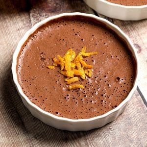

Three Ingredient Mousse

Description
This 3-ingredient healthy chocolate mousse is made with only dark chocolate, water and orange zest. Healthy desserts don't come easier than this! Whipped up in the blender for an airy, light, yet decadent texture. This one's a must try!
Ingredients
- 100g dark chocolate* 70% cocoa solids or above. Any lower the mousse may not set.
- 200ml boiling water
- Zest of 1 orange
Steps
- Break up the dark chocolate into a heat-proof bowl. Pour the boiling water on top and allow to sit for 2 minutes.
- Mix until the chocolate has completely melted, then pour into a high-speed blender along with the orange zest.
- Blend on high for 1-2 minutes, then pour into 4 small dessert glasses/dishes.
- Set in the fridge for 2 hours. Enjoy!